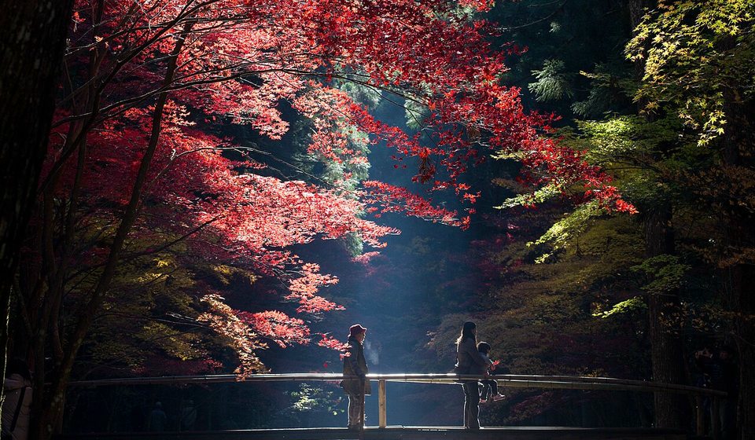
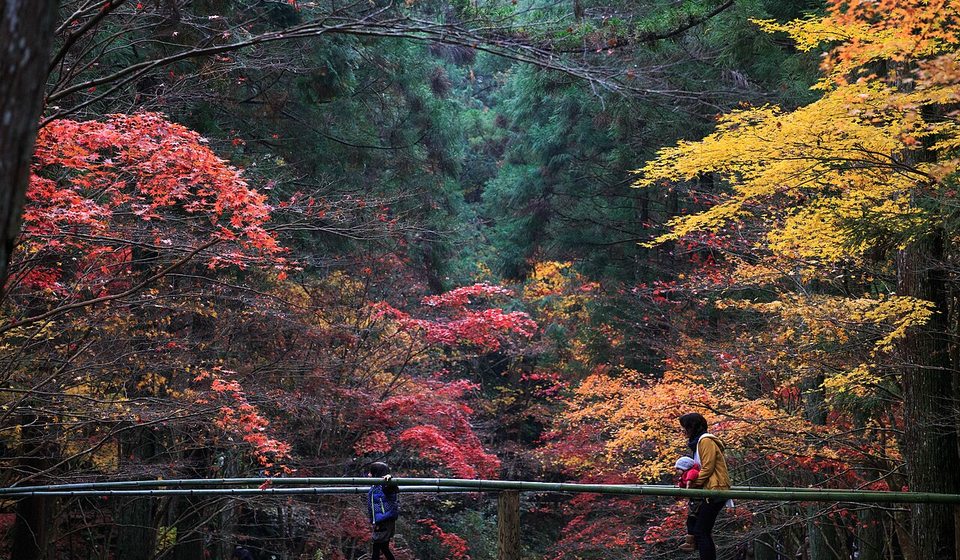

森町観光・紅葉｜最終確認 2026-08-10
静岡県森町の紅葉スポット比較｜小國神社・大洞院を町全体で選ぶ
静岡県森町の紅葉の名所といえば、小國神社と大洞院。どちらも『11月下旬が見頃』と紹介されますが、川沿いの神社と山あいの禅寺では、色づき方も楽しみ方もかなり違います。この記事は、森町全体の紅葉を比べる入口です。町の公式ページに載る地点ごとの写真は、「撮影日」つきで更新される年があります。その撮影日と、神社・寺院のお知らせを見ながら、行きたい一か所をゆっくり選んでいきましょう。個別スポットの詳しい案内は、それぞれの記事に任せます。
 写真
写真まず結論
どちらへ行く？ 二つの名所から選ぶ

小國神社
参拝 ＋ 宮川沿いの散策
遠江国一宮。参拝のあと、宮川沿いの散策と、ことまち横丁での食事まで、一度の訪問で楽しめます。
- 朱色の橋と、川沿いのもみじ
- ことまち横丁で食事・休憩
- にぎやかな秋を楽しみたい人に
大洞院
禅寺参拝 ＋ 山あいの境内
曹洞宗の禅寺。山あいの静かな境内で、紅葉と「森の石松」の伝承に触れられます。
- 静けさの中で過ごす秋
- 森の石松の伝承
- 食事・トイレは町なかで先に
行く前に、これだけ
見頃は「当てる」ものではなく、確かめるもの
町全体INDEXは見頃予想より確認先を示す
紅葉の色づきは、その年の気温や日照、雨、風まかせ。前年に『見頃』だった日が、今年も同じ景色とは限りません。だからこそ、日付を決め打ちするより、その年の様子を見ながら計画するのがおすすめです。
確認先にも役割分担があります。森町公式は地点どうしの比較、観光協会は町全体の周遊と行事、神社・寺院の公式は参拝や駐車、その年の運営の確認先です。目的に合った入口から見ると、情報がぐっと探しやすくなります。
この記事は、小國神社と大洞院の詳しい案内をまとめたものではありません。「どちらに行く？」「詳しい情報はどこで見る？」——その最初の選び方に絞った、町全体の入口です。
筆者が同じ日に二地点を歩いた体験談でもありません。2026年8月10日時点の公式情報をもとに、秋が近づいたら確認したいポイントを整理しました。
- 撮影日その写真が撮られた日
- 更新日ページが直された日
- 訪問日あなたが行く日
撮影日・更新日・訪問日を三つに分ける
町の紅葉ページを開いたら、まず探したいのは「その写真がいつ撮られたか」。ページ全体の更新日よりも、小國神社や大洞院の写真ごとの撮影日が頼りになります。
更新日が新しくても、載っている写真が数日前の撮影ということもあります。別の地点の「今日の一枚」を、自分の目的地の様子と重ねないようにしましょう。
撮影日から行く日までの天気もチェック。強風や雨、冷え込みがあると、色づきが進む一方で、落葉も増えていきます。
当日は、神社・寺院の公式発信と現地の表示を優先してください。数日前の「見頃」の表現は、立入や駐車、催しの今の情報とは分けて考えましょう。
二つの名所を知る
川沿いの神社と、山あいの禅寺
小國神社は参拝と宮川沿いの散策を一組にする
小國神社の魅力は、遠江国一宮への参拝と、境内を流れる宮川沿いの景色を、一度の訪問でどちらも楽しめること。お参りのあとに川沿いを歩く時間は、この場所ならではです。
鳥居に着いたら、まずは神社の案内と参拝の順路を確認してから散策へ。御祈祷や御朱印、祭事を希望する人は、受付の条件が別にあるので先に調べておくと安心です。
宮川沿いは、水位や濡れた石、木の根、落ち葉で足元が日々変わります。写真で見た景色に近道はせず、現地の通行表示に従って歩きましょう。
食事や休憩には、ことまち横丁を組み込むのも楽しみの一つ。ただ、混雑する紅葉期は待ち時間も読みにくいので、お店の営業や売り切れ情報は別に確認しておきましょう。
大洞院は禅寺参拝と山あいの境内を一組にする
大洞院の魅力は、曹洞宗の禅寺らしい静けさの中で、山あいの紅葉と「森の石松」の伝承に触れられること。にぎやかな名所とは違う、落ち着いた秋が待っています。
由緒や参拝の案内、その年の紅葉情報は寺院の公式が入口です。紅葉祭や夜の催しは、過去の年の写真から「今年もやるはず」と決めつけず、当年の告知を待ちましょう。
石松の墓所は、撮影の小道具ではなく、大切に守られてきた場所です。伝承への敬意を持って、供養やお寺の営みの妨げにならない順番でお参りしましょう。
山道や境内は、雨や苔、落ち葉で滑りやすさが変わります。町なかの舗装路のつもりの靴や歩行時間では計画せず、余裕を持ってどうぞ。
選び方のコツ
欲張らず、一地点を深く
二地点の色づきが同日同程度とは限らない
同じ森町でも、小國神社は川沿い、大洞院は山あい。日当たりも風も木の種類も違うので、色づきの進み方は別物と考えてください。一方の「見頃」は、もう一方の「見頃」ではありません。
同じ境内の中でも、入口、川辺、本堂のそば、日陰では、青葉、色づき、落葉が入り混じります。「全体が見頃」の一言で決めつけず、歩きながらその日の一番きれいな場所を探すのも楽しみ方です。
比べるときは、町の公式が載せる地点別の写真を並べて、撮影日と撮影場所がそろっているかを見ます。条件の違う写真どうしで、優劣をつける必要はありません。
色の進み方が違ったら、二地点を追いかけて移動するより、参拝したい方を一か所選ぶのがおすすめです。紅葉は、参拝地で出会う季節のひとつ。そう思うと、気持ちにも余裕が生まれます。
一日一地点を基本にし、二地点は条件付きにする
初めてなら、小國神社か大洞院のどちらか一方に絞るのがおすすめ。参拝、境内の散策、休憩を急がずに楽しんで、日没前に退出できる組み立てにしましょう。
二地点を回るなら、両方の最近の様子、参拝の可否、駐車、道路、天候、日没まで確認できた日だけに。欲張りの計画は、当日の小さな遅れで崩れてしまいます。
一地点目で混雑や雨、足の疲れがあれば、二地点目は思い切って取りやめてOK。予約のない紅葉巡りだからこそ、当日その場で縮められる余地が強みです。
途中に食事や買い物を足していくと、退出がどんどん遅れます。食事は一回に決めて、お土産は帰り道の一か所に絞ると、夕方の移動も慌てません。
二地点に挑む日のチェック
二つ回るのは、この4つがそろった日だけにしましょう。

行き方を組み立てる
車でも、車なしでも
車移動は駐車場の規模より退出経路を見る
駐車場の「○台」は過去の表示で、当日の空きを保証するものではありません。紅葉期の案内は神社・寺院の公式で確認し、当日は現地の係員の誘導を優先してください。
小國神社周辺は参拝の車と横丁の利用が重なりやすく、大洞院は山あいの道路事情があります。駐車の作戦は、地点ごとに別に立てましょう。
満車でも、路上や農道、私有地には停めないでください。ぐるぐる回って歩行者に近づくのも危険です。待機や時間変更の指示に従うのが、結局は一番の近道です。
帰り道は、来た道と同じとは限りません。規制や誘導が変わることもあるので、ナビの細道より現地の標識を優先して。紅葉に見とれるのは助手席の人の特権——運転する人は前を見て運転しましょう。
車なしは二地点周遊より一地点往復を作る
車なしなら、出発点は森町公式の公共交通ページ。鉄道、バス、町営バス、タクシーへの入口がまとまっています。通常の観光アクセスと、紅葉期だけの臨時運行は別物として確認しましょう。
小國神社へは臨時バスが案内される年もありますが、運行はその年しだい。行きだけでなく、乗り場と帰りの便まで、その年の情報を確認してください。過去の時刻メモは使えません。
大洞院は、駅からの徒歩だけで考えないのが無難です。タクシーの往復の配車と迎えの場所を、先に相談しておきましょう。山あいにいつも車が待っているとは限りません。
車なしで二地点をつなぐと、乗り継ぎと待ち時間が膨らみます。一地点と町なか歩き、または一地点の往復に組み立てて、帰りの便を先に押さえるのがコツです。
現地での過ごし方
混雑・マナー・雨の日
- 人の混雑参道・橋・受付の前
- 車の混雑駐車場の出入り
- 撮影者の混雑構図待ちの列
混雑は人・車・撮影者の三種類に分ける
人が増えると、参道や橋、受付前で立ち止まれる場所が減ります。家族と離れたときの集合場所と、退出の時刻を先に決めておくと安心です。
車の混雑は、着くときだけでなく、駐車場から公道へ出る時間ものびます。次の予約や帰りの列車には、普段の所要時間ではつながない前提で。
撮影スポットでは、同じ構図を待つ列や三脚で通路が狭くなります。撮れないときは、立入禁止の区域に別の場所を探さないでくださいね。
混雑の情報源は地図アプリだけではありません。寺社の当日の発信、道路規制、現地の係員の案内も合わせて確認を。早朝でも、無条件に自由に入れるとは限らないので注意しましょう。
撮影は寺社参拝・通行・プライバシーを優先する
境内に入ったら、まず撮影禁止、立入禁止、三脚、ドローン、商用撮影についての表示を確認しましょう。屋外だからといって、どこでも自由に撮れるとは限りません。
本殿や本堂、仏像、法要、祈祷、墓所は、それぞれ扱いが違います。確認せずに撮るのはもちろん、望遠で禁止区域を狙うような撮り方も避けましょう。
橋や参道、階段の真ん中で構図待ちをせず、通る人を先にどうぞ。子どもや他の人の顔が写るときは、公開の仕方にも配慮をお願いします。
ドローンは航空法だけでなく、土地の管理者や神社・寺院、周囲の安全が関わります。無断の飛行は、紅葉撮影の選択肢には入りません。
雨天は色の濃さより足元と撤退を優先する
雨の日は葉の色が濃く見えることもありますが、石や木の橋、苔、落ち葉、土はどれも滑りやすくなります。「いい写真」より安全を先に考えましょう。
傘をさすと視界も通路幅も狭くなり、カメラを持つ手もふさがります。雨具を着て、機材は最小限に。歩きながらの撮影はやめておきましょう。
宮川の水位や、大洞院周辺の山道に不安を感じたら、散策は短めに切り上げて。立入禁止の表示がなくても、危ないと感じたら引き返す勇気を。
強い雨や雷、強風、道路規制のときは、訪問そのものを中止しましょう。雨が止んだ直後も、増水や枝落ちの心配は残ります。
季節の移ろいを楽しむ
青葉も、落葉も、秋のうち
青葉が多い日は寺社と建築を主目的へ戻す
まだ色づき前なら、それはそれで楽しみ方があります。参拝を第一に、青もみじと水辺、山門や境内の佇まいを静かに味わう日です。
森町公式には、小國神社と大洞院の「青もみじ」を紹介するページもあります。紅葉の“失敗”ではなく、別の季節の景色として楽しんでください。
赤い葉を探して、境内の外の山や農地、私有地へ入るのはやめましょう。公式に公開された範囲の中で、一地点の参拝を気持ちよく終えるのが一番です。
訪問を延ばすなら、当年の紅葉ページの更新が始まるのを待ってください。「前年の一週間後だから見頃」という計算は、当てになりません。
落葉後は地面の色より滑りと寺社の営みを見る
落葉が増えたあとは、濡れた葉が段差や側溝を隠してしまいます。「落ち葉のじゅうたん」に踏み入る前に、通れる道かどうかを確認して。
木の葉が少なくなっても、小國神社への参拝も、大洞院の禅寺と石松の伝承も、ちゃんとそこにあります。訪問の価値は、紅葉だけではありません。
落ち葉を集めて並べたり、枝に戻して撮ったりはしないでください。植物や境内のものを持ち帰るのもNG。清掃や参拝の動線の妨げになってしまいます。
来年も来たいと思ったら、撮影日、天候、混雑、交通をメモしておくと、次回の計画に役立ちます。一回の“外れ”で、その場所の評価を決めてしまわないでくださいね。
紅葉祭・ライトアップは当年告知がある時だけ計画する
観光協会の年間行事には紅葉祭の季節の記載がありますが、開催日や内容、会場、駐車は年ごとに決まります。「毎年この日」と固定して考えないでください。
検索すると過去の年のライトアップ写真が出てきますが、今年も同じ照明、時刻、区域で行われるとは限りません。
当年の寺社や主催者の公式に実施の案内がなければ、夜間拝観は予定に入れないでください。閉門後の境内に、照明を期待して向かうのも控えましょう。
実施日でも、雨や風、混雑、運営の判断で変更になることがあります。出発直前に中止や交通の情報を確認して、昼の参拝を代案に用意しておくと安心です。
食・休憩・備え
無理のない一日を支えるもの
食事と休憩は紅葉地点ごとに別案を持つ
小國神社なら、ことまち横丁が食事の候補。ただ紅葉期は席も商品も営業も当日の運しだいです。「待てるのはここまで」と、売り切れのときの代案を決めておくと慌てません。
大洞院の周辺には、同じような飲食の選択肢は多くありません。お寺に入る前に、町なかで食事、飲み物、トイレを済ませておく方法がおすすめです。
境内では、持ち込んだ飲食物は許可された場所で。ごみは残さず、墓所や参道を休憩席にしないのがマナーです。
食事のために別の地区へ移動するなら、紅葉の二地点目は外しましょう。夕方の運転と駐車が増える組み方は、疲れのもとです。
家族・高齢者は歩幅とトイレから地点を選ぶ
子ども連れは、川辺や階段、車道、混雑の中で大人の手が足りるかが大事です。紅葉の写真を撮る間に、子どもを一人で待たせることのないように。
ベビーカーは、境内全域を通れるとは限りません。段差や砂利、混雑、置き場所を、事前に寺社へ問い合わせておくと安心。抱っこひもの暑さにも気をつけてください。
高齢の方は、駐車場から参拝場所までの道、トイレ、休憩場所、坂の有無を先に確認を。町全体を回るより、一地点で無理なく退出できる旅程がおすすめです。
同行者が疲れたら、車内に一人で長く残して撮影を続けるのはやめましょう。全員で戻るか、安全な休憩場所を施設に尋ねてください。
服装と機材は二地点周遊ではなく一地点分に絞る
靴は、小國神社の川沿いでも大洞院の山あいでも、濡れた落ち葉と段差に負けない歩きやすいものを。新品の靴を当日に初めて長時間使うのは避けましょう。
朝夕の冷えと日中の暖かさ、両方に対応できる重ね着で、雨具も携帯を。写真映えのために薄着で我慢したり、和装で滑りやすい道へ入ったりはしないでください。
カメラは、自分で安全に持てる一台が基本。三脚や交換レンズを増やして同行者を待たせないようにしましょう。機材を参道に置いて場所取りをするのもNGです。
予備電池や記録媒体、雨よけを用意しても、撮影できない区域や混雑の中ではしまってください。一枚の写真より、寺社の規則と安全な退出が大切です。
また来たくなる記録
比べられるメモを残す
- 訪問地点どちらの名所か
- 確認日時いつの情報か
- 色づきの範囲どこまで色づいたか
- 落葉の状態どれくらい散ったか
町全体の色づき記録は同じ四項目で残す
二つの地点を比べるときは、訪問地点、確認日時、色づいて見えた範囲、落葉の状態——この四つを同じ書式でメモするのがコツ。「町内は見頃」の一言では、違いが見えてきません。
写真は、鳥居や山門、橋、案内板など、あとから場所が分かる目印を一枚入れておくと便利です。望遠で切り取った赤い葉だけでは、地点全体の判断材料になりません。
朝の逆光、午後の日陰、雨上がりでは、同じ葉でも色が違って写ります。鮮やかさだけで比べず、撮影の方向と天気を一言添えておきましょう。
歩いた距離や、駐車場から境内までの混み方、休憩した場所も残しておくと、翌年の家族計画にそのまま使えます。色づきの記録と安全の記録は、別の欄に分けてどうぞ。
SNSに投稿するときは撮影日を明記して、「今も同じ景色」と受け取られる表現は避けましょう。私有地や参拝者の顔、車の番号が写っていないか、公開前の確認も忘れずに。
良い点——町と寺社の二方向から色づきを確認できる
良い点は、町の公式が小國神社と大洞院を地点ごとに撮影して見せてくれること、そして寺社自身も当年の境内や運営を発信してくれることです。二方向から確かめられるのは心強いところです。
小國神社は参拝と宮川、大洞院は禅寺と山あい。違う秋の景色が町の中に二つあるので、「数」ではなく「今日はどんな気分？」で選べます。
紅葉の前後でも、青もみじや寺社の建築、地域の歴史、町の食事へと、楽しみを切り替えられます。旅の価値が「見頃」の一点にかかっていないのは、この町の強みです。
観光協会の「秋の森町めぐり」は、町内の位置関係をつかむ入口に。各地点の詳しいことは、寺社の公式に戻って確認できます。
注文したい点——地点別撮影日を同じ画面で比較しにくい年がある
注文したい点は、当年の紅葉ページの公開時期や更新の形式が年によって変わること。前年の記事が検索の上位に残っていると、今の情報と間違えやすいのです。
最新年への共通URLと、地点ごとの撮影日、撮影場所、色づきの段階、過去の年度の表示が一画面にそろえば、比べるのはもっと簡単になるはずです。
寺社の駐車や催し、ライトアップ、中止の情報も、町の紅葉ページから直接たどれるようになれば、過去の写真を頼りにした夜間訪問も減らせます。
車なしの案内は、通常の交通と臨時の交通を分けて、帰りの便を目立たせる工夫がほしいところ。この記事では固定の時刻は載せず、確認の順番で補っています。
まとめ
確認の順番は、シンプルに
- 町の公式地点ごとの写真の撮影日を比べる
- 寺社の公式参拝・駐車・催しを確認する
- 交通と天気帰りの便まで確かめて出発
代案・結論——撮影日を見て参拝したい一地点を選ぶ
確認の順番はシンプルです。まず町の公式で地点ごとの写真の撮影日を比べ、次に寺社の公式で参拝、駐車、催し、最後に交通と天気。この三つで十分です。
参拝と川沿いの散策なら小國神社、禅寺と山あいなら大洞院。色づきだけを追って、一日に両方走り回るのはやめましょう。
雨や混雑、まだ青葉、もう落葉、催しが中止——そんな日は境内を短めにして、参拝、町歩き、食事、そして再訪の約束に切り替えればOKです。
結論は、「見頃を当てる」より「いつの情報か正しく読む」こと。一地点を敬意を持って訪ねて、安全に帰ってこられれば、それで秋の森町観光は大成功です。

大石の視点——紅葉の外れを地域の外れにしない
私（大石）は、葉の色だけで森町への訪問を成功・失敗とは分けません。参拝も、川の音も、山門も、町の食も、見頃の前後にだってちゃんとあるからです。
写真は、その日のほんの一部を切り取ったもの。公式の写真と自分の目の前の景色が違っても、撮影日や天気、場所の差を記録しておけば、次の判断の材料になります。
移住の下見を兼ねるなら、紅葉期の渋滞を「いつもの交通」と決めつけず、普段の日の道路や買い物、公共交通も見ておくのがおすすめです。
この記事の確認日は2026年8月10日です。色づきも駐車も催しも交通も変わっていくので、秋に訪ねる直前には、当年の公式をもう一度読み直してください。
一週間前の写真を当日の景色と読み替えないために、保存する画面には撮影日と閲覧日を一緒に書き込むのが私の習慣です。二地点で更新日が違えば、新しい方だけを町の代表にせず、それぞれ別々に判断します。
同行者と相談するときは、「どれだけ赤いか」の希望より先に、歩ける距離、参拝したい場所、帰りの時刻を共有します。色づきが期待より早くても遅くても、「何が残れば続けられるか」が見えてきます。
訪問のあとは、駐車待ちの長さや歩いた区間を、色づきの感想とは別に記録しています。翌年は紅葉の写真だけで日程を決めず、曜日や催しの有無も照らし合わせることで、地域にも参拝者にも無理のない再訪計画になります。
公式情報・確認先
掲載内容は次の一次情報を基礎に整理しました。営業、料金、催し、交通は変わるため、出発前または手続き前にリンク先で最新情報を確認してください。
- 小國神社・大洞院の青もみじ（静岡県森町、2026-08-10確認）
- 森町紅葉情報2024（静岡県森町、2026-08-10確認）
- 森町の公共交通について（静岡県森町、2026-08-10確認）
- 紅葉を楽しむ、秋の森町めぐり（森町観光協会、2026-08-10確認）
- 四季のイベント（森町観光協会、2026-08-10確認）
- 遠江國一宮 小國神社（小國神社、2026-08-10確認）
- 大洞院（大洞院、2026-08-10確認）